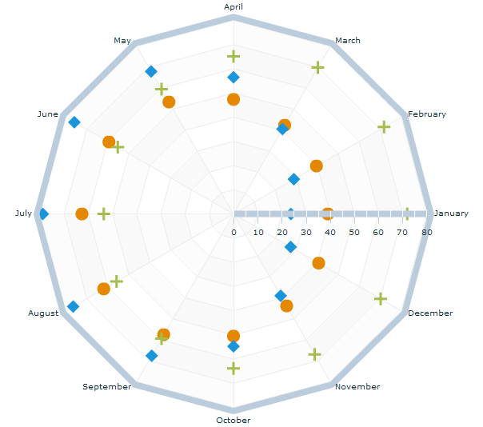

You can use the
RadarPlotSeries class
to represent data where each data point has one category that determines
its position along the angular axis, and one value that determines
its position along the radial axis. Using the data series renderers,
you can define the shape that IBM®
ILOG Elixir displays at each data
point.
By default, IBM ILOG Elixir displays the first data series in
the chart as a diamond at each point. When you define multiple data
series in a chart, IBM ILOG Elixir rotates the shape for the series
starting with a diamond, then a circle, and then a square. If you
have more series than default renderers, IBM ILOG Elixir begins again with the diamond.
The diamond shape, like the other shapes, is defined
by a renderer class. The renderer classes that define these shapes
are located in the Adobe®
Flex®
mx.charts.renderers package. The circle is defined
by the CircleItemRenderer class.
To use a renderer other than the default, you can set the itemRenderer style property as shown in the following
code:
<ilog:RadarPlotSeries dataField="London"
itemRenderer="mx.charts.renderers.DiamondItemRenderer" />
The following figure shows an example of a radar chart
with a plot series type. The chart shows the average temperatures
for London, Sydney, and Beijing on the radial axis, and the months
of the year on the angular axis.

The following code displays the radar plot series chart
shown in the figure.
<?xml version="1.0" ?>
<!-- Simple example to demonstrate the RadarChart control with
RadarPlotSeries.
-->
<mx:Application xmlns:mx="http://www.adobe.com/2006/mxml"
xmlns:ilog="http://www.ilog.com/2007/ilog/flex">
<mx:Script>
<![CDATA[
import mx.charts.renderers.CrossItemRenderer;
import mx.charts.renderers.CircleItemRenderer;
import mx.collections.ArrayCollection;
[Bindable]
public var temperature:ArrayCollection = new ArrayCollection([
{Month:"January", London:39, Sydney:71.8, Beijing:23.7},
{Month:"February", London:39.6, Sydney:71.8, Beijing:28.8},
{Month:"March", London:42.3, Sydney:69.8, Beijing:40.5},
{Month:"April", London:47.3, Sydney:65.1, Beijing:56.5},
{Month:"May", London:53.4, Sydney:59.5, Beijing:68},
{Month:"June", London:59.4, Sydney:55.2, Beijing:75.9},
{Month:"July", London:62.6, Sydney:53.6, Beijing:78.8},
{Month:"August", London:61.9, Sydney:55.8, Beijing:76.5},
{Month:"September", London:57.6, Sydney:59.5, Beijing:67.6},
{Month:"October", London:50.5, Sydney:63.9, Beijing:54.7},
{Month:"November", London:43.9, Sydney:67.1, Beijing:39},
{Month:"December", London:40.6, Sydney:70.2, Beijing:27.3}
]);
]]>
</mx:Script>
<mx:Panel width="100%" height="100%" title="Radar Plot Series Example"
layout="horizontal">
<ilog:RadarChart id="radar" width="100%" height="100%"
dataProvider="{temperature}" showDataTips="true">
<ilog:angularAxis>
<ilog:AngularAxis categoryField="Month" displayName="Month" />
</ilog:angularAxis>
<ilog:radialAxis>
<mx:LinearAxis baseAtZero="true" displayName="Temperature (Â˚F)" />
</ilog:radialAxis>
<ilog:series>
<ilog:RadarPlotSeries radius="8" dataField="London" displayName="London"
itemRenderer="mx.charts.renderers.CircleItemRenderer" />
<ilog:RadarPlotSeries radius="8" dataField="Sydney" displayName="Sydney"
itemRenderer="mx.charts.renderers.CrossItemRenderer" />
<ilog:RadarPlotSeries radius="8" dataField="Beijing" displayName="Beijing"
itemRenderer="mx.charts.renderers.DiamondItemRenderer" />
</ilog:series>
</ilog:RadarChart>
<mx:Legend dataProvider="{radar}" />
</mx:Panel>
</mx:Application>